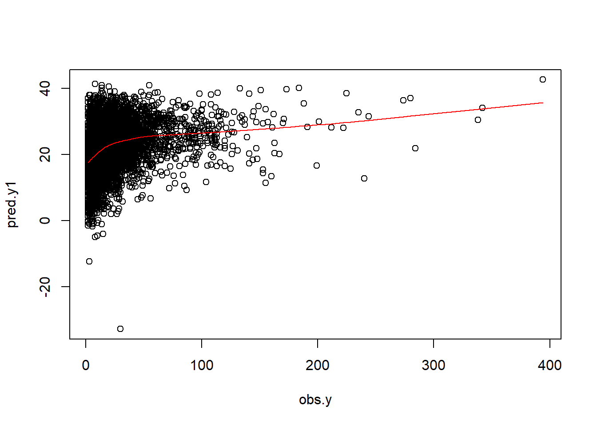
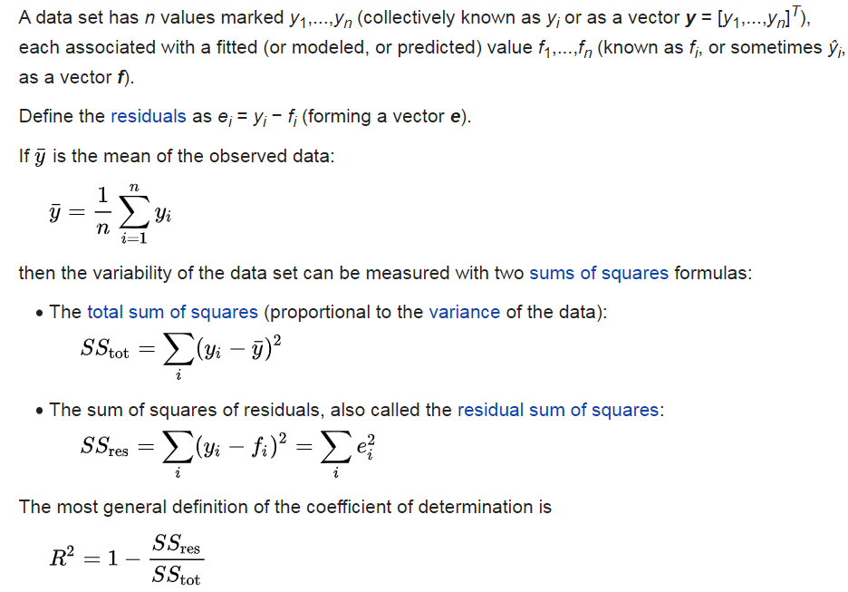

Chapter 2 Prediction from continuous outcome
2.1 Read previously saved data
ObsData <- readRDS(file = "data/rhcAnalytic.RDS")2.2 Prediction for length of stay
In this section, we show the regression fitting when outcome is continuous (length of stay).
2.3 Variables
baselinevars <- names(dplyr::select(ObsData,
!c(Length.of.Stay,Death)))
baselinevars## [1] "Disease.category" "Cancer" "Cardiovascular"
## [4] "Congestive.HF" "Dementia" "Psychiatric"
## [7] "Pulmonary" "Renal" "Hepatic"
## [10] "GI.Bleed" "Tumor" "Immunosupperssion"
## [13] "Transfer.hx" "MI" "age"
## [16] "sex" "edu" "DASIndex"
## [19] "APACHE.score" "Glasgow.Coma.Score" "blood.pressure"
## [22] "WBC" "Heart.rate" "Respiratory.rate"
## [25] "Temperature" "PaO2vs.FIO2" "Albumin"
## [28] "Hematocrit" "Bilirubin" "Creatinine"
## [31] "Sodium" "Potassium" "PaCo2"
## [34] "PH" "Weight" "DNR.status"
## [37] "Medical.insurance" "Respiratory.Diag" "Cardiovascular.Diag"
## [40] "Neurological.Diag" "Gastrointestinal.Diag" "Renal.Diag"
## [43] "Metabolic.Diag" "Hematologic.Diag" "Sepsis.Diag"
## [46] "Trauma.Diag" "Orthopedic.Diag" "race"
## [49] "income" "RHC.use"2.4 Model
# adjust covariates
out.formula1 <- as.formula(paste("Length.of.Stay~ ",
paste(baselinevars,
collapse = "+")))
saveRDS(out.formula1, file = "data/form1.RDS")
fit1 <- lm(out.formula1, data = ObsData)
require(Publish)
adj.fit1 <- publish(fit1, digits=1)$regressionTableout.formula1## Length.of.Stay ~ Disease.category + Cancer + Cardiovascular +
## Congestive.HF + Dementia + Psychiatric + Pulmonary + Renal +
## Hepatic + GI.Bleed + Tumor + Immunosupperssion + Transfer.hx +
## MI + age + sex + edu + DASIndex + APACHE.score + Glasgow.Coma.Score +
## blood.pressure + WBC + Heart.rate + Respiratory.rate + Temperature +
## PaO2vs.FIO2 + Albumin + Hematocrit + Bilirubin + Creatinine +
## Sodium + Potassium + PaCo2 + PH + Weight + DNR.status + Medical.insurance +
## Respiratory.Diag + Cardiovascular.Diag + Neurological.Diag +
## Gastrointestinal.Diag + Renal.Diag + Metabolic.Diag + Hematologic.Diag +
## Sepsis.Diag + Trauma.Diag + Orthopedic.Diag + race + income +
## RHC.useadj.fit1## Variable Units Coefficient CI.95 p-value
## 1 (Intercept) -76.8 [-139.4;-14.2] <0.1
## 2 Disease.category ARF Ref
## 3 CHF -5.6 [-9.0;-2.2] <0.1
## 4 Other -4.4 [-6.5;-2.3] <0.1
## 5 MOSF 2.9 [1.1;4.7] <0.1
## 6 Cancer None Ref
## 7 Localized (Yes) -7.8 [-15.7;0.1] <0.1
## 8 Metastatic -10.6 [-19.1;-2.1] <0.1
## 9 Cardiovascular 0 Ref
## 10 1 0.7 [-1.3;2.7] 0.5
## 11 Congestive.HF 0 Ref
## 12 1 -1.8 [-3.9;0.4] 0.1
## 13 Dementia 0 Ref
## 14 1 -1.3 [-3.6;1.1] 0.3
## 15 Psychiatric 0 Ref
## 16 1 -0.5 [-3.1;2.2] 0.7
## 17 Pulmonary 0 Ref
## 18 1 2.1 [0.1;4.0] <0.1
## 19 Renal 0 Ref
## 20 1 -6.9 [-10.8;-3.1] <0.1
## 21 Hepatic 0 Ref
## 22 1 -1.5 [-5.1;2.1] 0.4
## 23 GI.Bleed 0 Ref
## 24 1 -5.1 [-9.7;-0.5] <0.1
## 25 Tumor 0 Ref
## 26 1 4.6 [-3.4;12.6] 0.3
## 27 Immunosupperssion 0 Ref
## 28 1 0.1 [-1.4;1.7] 0.9
## 29 Transfer.hx 0 Ref
## 30 1 1.2 [-0.9;3.2] 0.3
## 31 MI 0 Ref
## 32 1 -1.7 [-5.3;2.0] 0.4
## 33 age [-Inf,50) Ref
## 34 [50,60) 0.1 [-2.0;2.3] 0.9
## 35 [60,70) -0.4 [-2.5;1.7] 0.7
## 36 [70,80) -1.1 [-3.6;1.4] 0.4
## 37 [80, Inf) -2.8 [-5.7;0.2] <0.1
## 38 sex Male Ref
## 39 Female 0.8 [-0.6;2.2] 0.2
## 40 edu 0.0 [-0.2;0.3] 0.7
## 41 DASIndex -0.1 [-0.2;0.1] 0.4
## 42 APACHE.score -0.1 [-0.1;-0.0] <0.1
## 43 Glasgow.Coma.Score 0.0 [-0.0;0.0] 0.2
## 44 blood.pressure -0.0 [-0.0;0.0] 0.2
## 45 WBC 0.0 [-0.0;0.1] 0.2
## 46 Heart.rate 0.0 [0.0;0.0] <0.1
## 47 Respiratory.rate -0.0 [-0.1;0.1] 1.0
## 48 Temperature 0.5 [0.1;0.9] <0.1
## 49 PaO2vs.FIO2 -0.0 [-0.0;-0.0] <0.1
## 50 Albumin -2.6 [-3.5;-1.6] <0.1
## 51 Hematocrit -0.2 [-0.3;-0.1] <0.1
## 52 Bilirubin -0.1 [-0.3;0.1] 0.2
## 53 Creatinine 0.5 [0.1;1.0] <0.1
## 54 Sodium 0.1 [0.0;0.2] <0.1
## 55 Potassium 0.3 [-0.3;1.0] 0.3
## 56 PaCo2 0.1 [0.0;0.2] <0.1
## 57 PH 10.1 [2.2;17.9] <0.1
## 58 Weight 0.0 [-0.0;0.0] 1.0
## 59 DNR.status No Ref
## 60 Yes -8.0 [-10.1;-5.8] <0.1
## 61 Medical.insurance Medicaid Ref
## 62 Medicare -0.5 [-3.2;2.2] 0.7
## 63 Medicare & Medicaid -2.4 [-5.8;0.9] 0.2
## 64 No insurance -1.8 [-5.2;1.6] 0.3
## 65 Private -2.1 [-4.6;0.4] 0.1
## 66 Private & Medicare -2.0 [-4.8;0.8] 0.2
## 67 Respiratory.Diag No Ref
## 68 Yes 0.3 [-1.4;2.0] 0.7
## 69 Cardiovascular.Diag No Ref
## 70 Yes 0.4 [-1.4;2.1] 0.7
## 71 Neurological.Diag No Ref
## 72 Yes 3.5 [1.1;6.0] <0.1
## 73 Gastrointestinal.Diag No Ref
## 74 Yes 2.6 [0.3;4.8] <0.1
## 75 Renal.Diag No Ref
## 76 Yes 1.8 [-1.4;5.0] 0.3
## 77 Metabolic.Diag No Ref
## 78 Yes -1.2 [-4.3;2.0] 0.5
## 79 Hematologic.Diag No Ref
## 80 Yes -3.9 [-6.8;-0.9] <0.1
## 81 Sepsis.Diag No Ref
## 82 Yes 0.0 [-2.0;2.0] 1.0
## 83 Trauma.Diag No Ref
## 84 Yes 1.1 [-5.9;8.2] 0.8
## 85 Orthopedic.Diag No Ref
## 86 Yes 3.5 [-15.1;22.2] 0.7
## 87 race white Ref
## 88 black -1.1 [-3.1;0.8] 0.2
## 89 other 0.2 [-2.5;3.0] 0.9
## 90 income $11-$25k Ref
## 91 $25-$50k 2.5 [0.2;4.7] <0.1
## 92 > $50k 0.4 [-2.4;3.3] 0.8
## 93 Under $11k -0.4 [-2.2;1.4] 0.6
## 94 RHC.use 2.9 [1.4;4.4] <0.12.4.1 Design Matrix
- Notations
- n is number of observations
- p is number of covariates
Expands factors to a set of dummy variables.
dim(ObsData)## [1] 5735 52length(attr(terms(out.formula1), "term.labels"))## [1] 50head(model.matrix(fit1))## (Intercept) Disease.categoryCHF Disease.categoryOther Disease.categoryMOSF
## 1 1 0 1 0
## 2 1 0 0 1
## 3 1 0 0 1
## 4 1 0 0 0
## 5 1 0 0 1
## 6 1 0 1 0
## CancerLocalized (Yes) CancerMetastatic Cardiovascular1 Congestive.HF1
## 1 1 0 0 0
## 2 0 0 1 1
## 3 1 0 0 0
## 4 0 0 0 0
## 5 0 0 0 0
## 6 0 0 0 1
## Dementia1 Psychiatric1 Pulmonary1 Renal1 Hepatic1 GI.Bleed1 Tumor1
## 1 0 0 1 0 0 0 1
## 2 0 0 0 0 0 0 0
## 3 0 0 0 0 0 0 1
## 4 0 0 0 0 0 0 0
## 5 0 0 0 0 0 0 0
## 6 0 0 1 0 0 0 0
## Immunosupperssion1 Transfer.hx1 MI1 age[50,60) age[60,70) age[70,80)
## 1 0 0 0 0 0 1
## 2 1 1 0 0 0 1
## 3 1 0 0 0 0 0
## 4 1 0 0 0 0 1
## 5 0 0 0 0 1 0
## 6 0 0 0 0 0 0
## age[80, Inf) sexFemale edu DASIndex APACHE.score Glasgow.Coma.Score
## 1 0 0 12.000000 23.50000 46 0
## 2 0 1 12.000000 14.75195 50 0
## 3 0 1 14.069916 18.13672 82 0
## 4 0 1 9.000000 22.92969 48 0
## 5 0 0 9.945259 21.05078 72 41
## 6 1 1 8.000000 17.50000 38 0
## blood.pressure WBC Heart.rate Respiratory.rate Temperature
## 1 41 22.09765620 124 10 38.69531
## 2 63 28.89843750 137 38 38.89844
## 3 57 0.04999542 130 40 36.39844
## 4 55 23.29687500 58 26 35.79688
## 5 65 29.69921880 125 27 34.79688
## 6 115 18.00000000 134 36 39.19531
## PaO2vs.FIO2 Albumin Hematocrit Bilirubin Creatinine Sodium Potassium PaCo2
## 1 68.0000 3.500000 58.00000 1.0097656 1.1999512 145 4.000000 40
## 2 218.3125 2.599609 32.50000 0.6999512 0.5999756 137 3.299805 34
## 3 275.5000 3.500000 21.09766 1.0097656 2.5996094 146 2.899902 16
## 4 156.6562 3.500000 26.29688 0.3999634 1.6999512 117 5.799805 30
## 5 478.0000 3.500000 24.00000 1.0097656 3.5996094 126 5.799805 17
## 6 184.1875 3.099609 30.50000 1.0097656 1.3999023 138 5.399414 68
## PH Weight DNR.statusYes Medical.insuranceMedicare
## 1 7.359375 64.69995 0 1
## 2 7.329102 45.69998 0 0
## 3 7.359375 0.00000 0 0
## 4 7.459961 54.59998 0 0
## 5 7.229492 78.39996 1 1
## 6 7.299805 54.89999 0 1
## Medical.insuranceMedicare & Medicaid Medical.insuranceNo insurance
## 1 0 0
## 2 0 0
## 3 0 0
## 4 0 0
## 5 0 0
## 6 0 0
## Medical.insurancePrivate Medical.insurancePrivate & Medicare
## 1 0 0
## 2 0 1
## 3 1 0
## 4 0 1
## 5 0 0
## 6 0 0
## Respiratory.DiagYes Cardiovascular.DiagYes Neurological.DiagYes
## 1 1 1 0
## 2 0 0 0
## 3 0 1 0
## 4 1 0 0
## 5 0 1 0
## 6 1 0 0
## Gastrointestinal.DiagYes Renal.DiagYes Metabolic.DiagYes Hematologic.DiagYes
## 1 0 0 0 0
## 2 0 0 0 0
## 3 0 0 0 0
## 4 0 0 0 0
## 5 0 0 0 0
## 6 0 0 0 0
## Sepsis.DiagYes Trauma.DiagYes Orthopedic.DiagYes raceblack raceother
## 1 0 0 0 0 0
## 2 1 0 0 0 0
## 3 0 0 0 0 0
## 4 0 0 0 0 0
## 5 0 0 0 0 0
## 6 0 0 0 0 0
## income$25-$50k income> $50k incomeUnder $11k RHC.use
## 1 0 0 1 0
## 2 0 0 1 1
## 3 1 0 0 1
## 4 0 0 0 0
## 5 0 0 1 1
## 6 0 0 1 0dim(model.matrix(fit1))## [1] 5735 64p <- dim(model.matrix(fit1))[2] # intercept + slopes
p## [1] 642.4.2 Obtain prediction
obs.y <- ObsData$Length.of.Stay
summary(obs.y)## Min. 1st Qu. Median Mean 3rd Qu. Max.
## 2.00 7.00 14.00 21.56 25.00 394.00# Predict the above fit on ObsData data
pred.y1 <- predict(fit1, ObsData)
summary(pred.y1)## Min. 1st Qu. Median Mean 3rd Qu. Max.
## -32.76 16.62 21.96 21.56 26.73 42.67n <- length(pred.y1)
n## [1] 5735plot(obs.y,pred.y1)
lines(lowess(obs.y,pred.y1), col = "red")
2.5 Measuring prediction error
Prediction error measures how well the model can predict the outcome for new data that were not used in developing the prediction model.
- Bias reduced for models with more variables
- Unimportant variables lead to noise / variability
- Bias variance trade-off / need penalization
2.5.1 R2

# Find SSE
SSE <- sum( (obs.y - pred.y1)^2 )
SSE## [1] 3536398# Find SST
mean.obs.y <- mean(obs.y)
SST <- sum( (obs.y - mean.obs.y)^2 )
SST## [1] 3836690# Find R2
R.2 <- 1- SSE/SST
R.2## [1] 0.07826832require(caret)
R2(pred.y1, obs.y)## [1] 0.078268322.5.2 RMSE

# Find RMSE
Rmse <- sqrt(SSE/(n-p))
Rmse## [1] 24.97185RMSE(pred.y1, obs.y)## [1] 24.83212
2.6 Overfitting and Optimism
- Model usually performs very well in the empirical data where the model was fitted in the same data (optimistic)
- Model performs poorly in the new data (generalization is not as good)
2.6.1 Causes
- Model determined by data at hand without expert opinion
- Too many model parameters (\(age\), \(age^2\), \(age^3\)) / predictors
- Too small dataset (training) / data too noisy
2.6.2 Consequences
- Overestimation of effects of predictors
- Reduction in model performance in new observations
2.6.3 Proposed solutions
We generally use procedures such as
- Internal validation
- sample splitting
- cross-validation
- bootstrap
- External validation
- Temporal
- Geographical
- Different data source to calculate same variable
- Different disease
In this chapter, we will talk about Regression that deals with prediction of continuous outcomes. We will use multiple linear regression to build the first prediction mode.